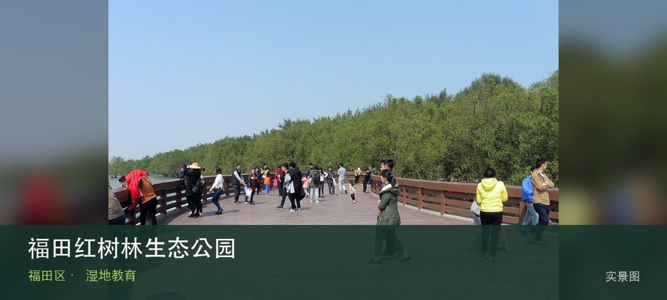

适合谁
适合亲子自然教育、观鸟新手和低强度步行者；不适合携宠、投喂或追逐鸟群。

SHENZHEN GUIDE · 007
下沙 · 湿地教育
福田红树林生态公园位于下沙深圳河口，红树林、潮滩与深圳河口共同构成城市中的滨海生态课堂，观鸟价值来自迁徙季的安静观察而不是近距离拍摄。观察重点是红树林潮间带与候鸟观察点之间的生境关系，而不是追逐动物或进入滩涂取景。保持距离、不投喂，并把水位、蚊虫、暴晒和雷雨作为当天是否停留的判断条件。
WHY GO
适合亲子自然教育、观鸟新手和低强度步行者；不适合携宠、投喂或追逐鸟群。
先看潮汐与鸟讯，再在开放步道选择一个观察点停留；使用望远镜，不进入滩涂和保育边界。
公共交通先到下沙深圳河口片区，再以福田红树林生态公园公开参观入口为终点；多入口地点须按计划游线选择入口，并预先锁定返程站点。
导航至福田红树林生态公园官方开放入口配套或邻近正规公共停车场；周末满位即改乘公共交通，不在绿道口、村道或消防通道临停。
11 月至次年 3 月通常更适合观鸟；春夏注意蚊虫、暴晒、雷雨与水位变化，不进入生态保育区域。
NEARBY IDEAS
 编辑配图·非现场实景
编辑配图·非现场实景
新洲河碧道位于新洲社区，社区河道经过生态修复后形成亲水步道、桥下空间与连续绿带，观察重点是水岸如何嵌入高密度居住区。
 编辑配图·非现场实景
编辑配图·非现场实景
福荣都市绿道位于新洲路至红树林的福荣路南侧，约3.08公里的都市健身走廊串联七个社区，开放时间通常为07:00—22:00。
 授权实景图
授权实景图
皇岗公园位于益田路2002号，15公顷级社区城市公园，以山体、林荫和运动空间服务皇岗与益田片区。这处地点的内容并不靠规模取胜，山体林荫步道和社区运动空间才是最值得核对的现场证据。